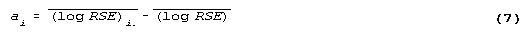
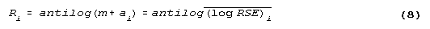
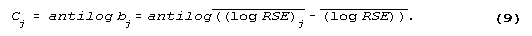

Appendix C
Quality of the Data
Introduction
This appendix discusses several issues relating to the quality of the Residential Transportation Energy Consumption Survey (RTECS) data and to the interpretation of conclusions based on these data. The first section discusses undercoverage of the vehicle stock in the residential sector. The second section discusses the effects of using July 1994 as a time reference for the survey. The remainder of this appendix discusses the treatment of sampling and nonsampling errors in the RTECS, the quality of specific data items such as the Vehicle Identification Number (VIN) and fuel prices, and poststratification procedures used in the 1994 RTECS.
The quality of the data collection and the processing of the data affects the accuracy of estimates based on survey data. All the statistics published in this report such as total vehicle-miles traveled (VMT) are estimates of population values. These estimates are based on observations from a randomly chosen subset of the entire population of occupied housing units. Consequently, the estimates always differ from the true population values. Because the RTECS is a sample survey, data from the 1994 RTECS are subject to various sources of nonsampling and sampling error.
Nonsampling error is a measure of variability due to the conduct of the survey. These errors can include: population undercoverage during sampling; questionnaire wording and format; response bias and variance; interviewer error; coding and/or keypunching error; and nonresponse bias. Nonsampling errors are treated in several sections of this appendix. The main section pertains to the imputation procedures used for item nonresponses, and the special treatment given to the fuel efficiency, reported in miles per gallon (MPG), of pre-1975 vehicles.
Sampling error is a measure of the variability in the data because a sample of households was surveyed rather than the entire population. The different samples that could be selected would each produce different values for the survey statistics. Because the survey used probability sampling techniques, it is possible to estimate the size of the sampling error for any statistic. These estimates can be used as a guide in making inferences from the sample estimates to the total population. The final section on sampling error pertains to estimating the magnitude of the error and the presentation of sampling errors as row and column factors in the detailed tables of this report.
Noncovered Residential Vehicles
The RTECS is a subsample of the Residential Energy Consumption Survey (RECS). Therefore, any type of household not covered in the RECS would affect the type of household vehicles not covered in the RTECS. The following types of individuals or families were not covered by RECS and, hence, the vehicles corresponding to these households were not covered by RTECS.
Families or individuals living in group quarters such as college dormitories, military barracks, or large boarding houses (10 or more unrelated adults).
Families or individuals living in recreation vehicles or other vehicles.
Families or individuals with no fixed address.
The effect of these omissions is an underestimation of the total number of vehicles in the residential sector and an underestimation in the number of miles driven, gallons consumed, and dollars spent.
July 1994 as a Reference for Number of Households
The design of RTECS calls for households to be followed for the 1994 calendar year. Consequently, households formed during 1994 are represented in the sample by households that existed at the time the 1993 RECS was fielded. Hence, RTECS may have an over-representation of established households at the expense of newly formed households.
The decision to follow households for the entire year and not add a sample of households formed during 1994 means that as the survey progressed through 1994, the estimate of the number of vehicles accumulated a negative bias. This happens for several reasons.
When established households separate, only part of the household is followed by RTECS. If the part of the household that is not followed takes a vehicle with them, that vehicle is counted as a disposed vehicle.
Any vehicle acquired by a household member that leaves the household is not included in the RTECS.
The number of households for the 1994 RTECS is set equal to the Current Population Survey (CPS) estimate of the number of households as of July 1994. (See the section below on poststratification.) RTECS does not provide for an increasing number of households from January to December. The household number for July is the number used for the entire year. This has the effect of overestimating the number of households and vehicles for January 1994 and underestimating the number for December 1994.
Nonsampling Error
Nonsampling errors are due to the conduct of the survey, and include both random errors and systematic errors or biases. The magnitudes of nonsampling biases cannot be estimated from the sample data. Thus, avoidance of systematic biases is a primary objective of all stages of survey design. (See Appendix A, "How the Survey was Conducted," for a discussion of procedures implemented to minimize all types of nonsampling errors.) Subsequent to conducting a survey, problems of unit nonresponse and item nonresponse need to be addressed. The treatment in the RTECS of these types of errors are discussed in separate sections below.
Unit Nonresponse
Unit nonresponse is the type of nonresponse that occurs when no data are available for an entire sampled household. Most unit nonresponse cases are caused by the respondent being unavailable or the respondent's refusal to cooperate.
Unit nonresponse for the 1994 RTECS must be addressed in the context of the unit nonresponse for the 1993 RECS, since the 1994 RTECS sample was drawn from households that responded to the 1993 RECS. Thus, in all cases, at least the RECS data were available for every RTECS household, therefore, no RTECS household was a total nonrespondent. Generally, weight adjustment was the method used to reduce unit nonresponse bias in the RECS statistics and that adjustment carried over automatically to the RTECS subsample. (See Housing Characteristics 1993 (published May 1992), DOE/EIA-0314(90) Appendix A, for a discussion of unit nonresponse adjustment.)
Imputation Procedures for Item Nonresponse
Item nonresponse occurs when the respondents do not know the answer or refuse to answer a question, or when an interviewer does not ask a question or does not record an answer. To facilitate "full-sample" data analyses, imputations were made to provide the most probable responses when responses were missing. The following imputation techniques were used: hot-decking, predictive mean matching, and regression.
Hot-Deck Procedure
The most commonly used technique of imputation for the RTECS was the hot-deck procedure. In hot-decking, when a certain response is missing for a given household or vehicle, another household or vehicle called a donor is randomly chosen to furnish its reported value for that missing item. The value is then assigned to the nonrespondent household or vehicle. To serve as a potential donor, a household or vehicle had to be similar to the nonrespondent in characteristics correlated with the missing item.
The RTECS items that were imputed using the hot-deck procedure were pre-1975 vehicle characteristics and fuel grade. Household demographic items such as family income and ethnic background were hot-decked as part of the RECS. (See Housing Characteristics 1993 (published June 1995), DOE/EIA-0314(93), Appendix C, for a discussion of imputation of household characteristics.)
Mid-Year Stock Dispositions and Acquisitions
Changes to the vehicle stock were defined as acquisitions, dispositions, or a combination of both. In an ideal RTECS, a beginning vehicle stock inventory reported in the 1993 RECS interview would be followed throughout the 1994 RTECS calendar year and, at the time of each RTECS contact, changes in vehicle stock would be reported. However, because in some cases it was impossible to follow a household for the entire RTECS year due to attrition, it was unknown if, for these households, vehicle stock changes were made.
In the 1991 Procedures were developed to impute changes in vehicle stock for households that were not followed for the entire year. This procedure was eliminated from the 1994.
Regression Procedures
Multiple regressions were used to impute for annual VMT for vehicles imputed as acquired, since two odometer readings were not available in these cases. Simple linear and multiple regressions were also used to impute annual mileage for other vehicles when two odometer readings were not obtained. (See Appendix B, "Estimation Methodologies," for details on the imputation of VMT).
Imputation of Vehicle Characteristics for 1975 and Later
Vehicle characteristics that were missing for vehicle model years 1975 and later were imputed using either the VIN or the Environmental Protection Agency (EPA) certification files (CERT files) containing laboratory test results of MPG. When the vehicle characteristic was missing from the questionnaire, but the VIN was available, the characteristics from the VIN were used. Additionally, when there was a discrepancy between the VIN and the RTECS respondent's answer, the VIN generally overrode the response provided by the respondent. If both the VIN and questionnaire responses were missing, the vehicle characteristics were imputed from the CERT files. An individual record from the CERT files was chosen as a donor for a recipient sample vehicle by first narrowing the choice by using the known vehicle characteristics of the recipient vehicle, and then second, selecting a single CERT record according to probabilities proportional to vehicle sales. The type of fuel (gasoline or diesel) used in the vehicle was also imputed using the EPA CERT files (See Appendix B, "Estimation Methodologies," for more details on the use of EPA CERT files in the 1994 RTECS.)
Imputation of Vehicle Characteristics and MPG for Pre-1975 Vehicle Model Years
For all RTECS sample vehicles, the questionnaires and VIN's jointly provided the following vehicle characteristics: make, model, model year, number of cylinders, engine displacement (liters or cubic inches), transmission type (automatic or manual), and fuel system type (carbureted, gasoline fuel injected, or diesel). Many of these characteristics were used to assign EPA test MPG to the sample vehicles. EPA records, in the form of CERT files, were used to provide these MPG, as well as to provide any vehicle characteristics that were not obtained from the questionnaire or VIN (See Appendix B, "Estimation Methodologies," for more details.)
The EPA CERT files, however, have only been available since 1975. The 1994 RTECS file contained 556 pre-1975 vehicles (9 percent), and for these vehicles, missing characteristics were imputed by a hot-deck procedure using 1994 respondents as donor vehicles. Each donor and recipient vehicle was paired on as many of the following characteristics as possible: make, model, model year, transmission type, number of cylinders, and engine displacement.
The MPG for pre-1975 vehicles were imputed using a cold-deck procedure. The donor vehicles were respondents from the 1985 RTECS. Fuel purchase diaries were used in the 1985 RTECS; therefore, no shortfall adjustments were needed for the MPG. Cold-decking was performed within categories defined by make, model, model year, transmission type, and number of cylinders, with collapsing of categories performed where necessary. For example, MPG could be selected from donor vehicles of a certain size class in either the Pontiacs or the Chevrolets, if they shared similar model years, transmission type, and the General Motors 350 cubic inch V-8 engine. However, it appeared that a greater share of the variability in the 1985 RTECS MPG was due to individual driving habits, automotive maintenance and diary keeping, rather than to vehicle characteristics.
Quality of Specific Data Items
Vehicle Identification Number
The VIN is a unique combination of numbers and letters that when decoded provide the characteristics of a particular vehicle. Since 1954, the VIN has been used by American automobile manufacturers. Beginning with the 1981 model year, a standard 17-character VIN was assigned to all vehicles sold in the United States. VIN's were obtained for most of the vehicles in the 1994 RTECS. The vehicle characteristics from decoded VIN's were employed in the 1994 RTECS to enhance the accuracy of reported vehicle characteristics. These characteristics were used in determining vehicle fuel efficiency based on the EPA certification files of test laboratory MPG estimates (See Appendix A, "How the Survey Was Conducted," for a discussion of the VIN.)
There were three occasions where attempts were made to obtain the VIN's: the RECS interview, the Beginning-of-Year(B-O-Y) interview, and the End-of-Year (E-O-Y) interview.
A computer software program, VINDICATOR, from the Highway Loss Data Institute, was used to decode the VIN's. For VIN's that could not be decoded immediately using this program, a computer routine was developed to correct for common errors in the transcription of VIN's. The vehicle characteristics produced for these "fixed" VIN's were then carefully compared to respondent information. Approximately 200 VIN's were salvaged using this routine.
Overall, the collection of the VIN was a highly successful endeavor that yielded quality data. VIN's were obtained for 4,617 (76 percent) of the 6,084 total sample vehicles. Of the 4,617 obtained VIN's, 3,842 ( 83 percent) were considered "good" VIN's. In summary, "good" VIN's were obtained for 3,842 (63 percent) of the 6,084 sampled vehicles. (A good VIN was one that did not require correcting for common transcription error before it could be decoded.)
Vehicle Fuel Price and Expenditures
Vehicle Fuel Price: In the 1988 through the 1994 RTECS, fuel price data were not collected via fuel purchase diaries, as had previous RTECS. Instead, fuel prices were determined from Bureau of Labor Statistics (BLS) Retail Pump Average Gasoline Prices and the Lundberg Survey, Inc., prices. (See Appendix B, "Estimation Methodologies" for a discussion of the sources of vehicle fuel prices and the assignment of specific prices to the RTECS data.)
To validate the new RTECS price methodology, the 1985 RTECS gasoline prices were recalculated and analyzed using the new methodology (BLS price data). Results of this analysis suggest that if the 1985 BLS price data had been used in 1985 instead of fuel purchase diary data, the average vehicle fuel price reported for the 1985 RTECS would have increased by approximately 2 cents per gallon.
For this analysis, only the prices for unleaded regular gasoline, unleaded premium gasoline, and leaded regular gasoline were recalculated. The prices for leaded premium, diesel, and other fuels were left equal to the prices used in the 1985 RTECS.
The BLS prices that were used for recalculating the 1985 RTECS prices were monthly 1985 regional retail gasoline prices for leaded regular, unleaded regular, and unleaded premium. The prices were averaged across months for each of the above fuel types within each of the four Census regions. One of these average prices was assigned to each of the RTECS vehicles depending on Census region and on vehicle fuel type used.
Table C1 presents the BLS prices (monthly prices were for 1985) with the corresponding average prices from the 1985 RTECS. Overall, the BLS prices compared well with the corresponding average regional fuel prices from RTECS. The largest difference corresponded to unleaded premium gasoline.
While there was general consistency between the BLS prices and the 1985 RTECS prices, the differences that did exist may have stemmed from the differences in the two survey populations and survey collection procedures.
The BLS population (approximately 85 percent of the total U.S. population) consisted of the U.S. urban, noninstitutional population excluding households living on military bases. The RTECS population represented both urban and rural areas and included military bases.
BLS prices were based on prices gathered from service stations and sales volume. The 1985 RTECS prices were produced from fuel quantities and expenditures for individual vehicle refuelings.
The BLS sample was a rotating sample of service stations. Every year approximately one-fifth of the service stations in the sample were replaced with service stations that consumers reported using in that year's "Point of Purchase Survey" conducted by the BLS. Thus, the BLS prices included service stations where consumers currently purchased fuel as well as stations where they had previously purchased fuel. The RTECS prices were based entirely on the service stations where consumers were currently purchasing their vehicle fuel.
Table C1. Average Bureau of Labor Statistics Gasoline Prices and 1985 Residential Transportation Energy Consumption Survey Prices by Census Region and Fuel Type
Census Region and Fuel Type |
Average Price (dollars per gallon) |
|
1985 RTECS |
1985 BLSa |
|
| Total U.S. Total Unleaded Regular Unleaded Premium Leaded Regular Leaded Premium Diesel Other |
$1.1805 1.1848 1.2945 1.1080 1.3087 1.1845 1.1702 |
$1.1969 1.2001 1.3396 1.1128 b b b |
| Northeast Total Unleaded Regular Unleaded Premium Leaded Regular Leaded Premium Diesel Other |
1.2033 1.1931 1.3151 1.1358 1.3220 1.2123 1.2209 |
1.2082 1.2000 1.3327 1.1243 b b b |
| Midwest Total Unleaded Regular Unleaded Premium Leaded Regular Leaded Premium Diesel Other |
1.1831 1.1916 1.2838 1.1244 1.2495 1.1862 1.1965 |
1.2098 1.2185 1.3572 1.1333 b b b |
| South Total Unleaded Regular Unleaded Premium Leaded Regular Leaded Premium Diesel Other |
1.1620 1.1615 1.2795 1.0806 1.2333 1.1706 1.1112 |
1.1847 1.1805 1.3302 1.0927 b b b |
| West Total Unleaded Regular Unleaded Premium Leaded Regular Leaded Premium Diesel Other |
1.1909 1.2075 1.3300 1.1170 1.3985 1.1885 1.2040 |
1.1938 1.2091 1.3562 1.1153 b b b |
aBLS average prices in this table were derived by assigning BLS prices to the 1985 RTECS sample vehicles, then producing
national averages using the 1985 RTECS sample weights.
bPrices for these fuels were not collected by BLS; therefore, the 1985 RTECS prices were used.
Vehicle Fuel Expenditures: Vehicle fuel expenditures were calculated by multiplying the price paid for fuel by the quantity of fuel used. Expenditures per household were the sum of the expenditures for each vehicle in the household. To assess the effect of the 1988 RTECS price methodology on vehicle fuel expenditures, the 1985 household vehicle fuel expenditures were recalculated using the 1985 BLS price data. Table C2 compares average expenditures by fuel type and Census region using both sources of price data.
The use of BLS prices for the 1985 RTECS would have increased the per household expenditures for vehicle fuel from $1,274 per year to $1,292 per year. The changes in expenditures reflect differences in the average price of gasoline between the new 1988 methodology and the 1985 RTECS methodology since the average consumption used to calculate the expenditures comes from the RTECS data under the new and original methodologies. The estimated total 1985 U.S. expenditures for vehicle fuel increased from 99.1 billion dollars to 100.4 billion dollars when the 1988 methodology was applied to the 1985 RTECS data.
The 1988 RTECS price methodology seemed to have little effect on the standard errors of expenditure statistics. When the 1985 RTECS prices were recalculated using 1985 BLS price data, the standard errors of the expenditures were close to the standard errors reported using the 1985 RTECS fuel purchase diary data. While the standard errors of the fuel prices were reduced, in some cases by 50 percent, the variability in fuel prices was very small relative to the variability in gallons of fuel consumed. Therefore, the standard errors of the vehicle fuel expenditures were largely controlled by the variability in gallons of fuel consumed.
Sampling Error
The random differences between the survey estimates and the true population value that occur because of the particular sample that was selected are known as sampling errors. The average sampling error, averaged over all possible samples, should be zero. Although the sampling error is nonzero and unknown for the particular sample chosen, the sample design permits sampling errors to be estimated. The typical magnitude of the sampling error is measured by the "standard error" of the estimate. Standard errors in this report are given as percents of their estimated values, that is, as relative standard errors (RSE). The RSE is also known as the coefficient of variation.
Table C2. Average Bureau of Labor Statistics Vehicle Fuel Expenditures and 1985 Residential
Transportation Energy Consumption Survey Vehicle Fuel Expenditures by Census
Region and Fuel Type
Census Region and Fuel Type |
Average Expenditures |
|
1985 RTECS |
1985 BLSa |
|
| Total U.S. Total Unleaded Regular Unleaded Premium Leaded Regular Leaded Premium Diesel Other |
$1,274 686 213 341 10 22 2 |
$1,292 695 220 342 b b b |
| Northeast Total Unleaded Regular Unleaded Premium Leaded Regular Leaded Premium Diesel Other |
1,169 694 225 232 6 12 1 |
1,174 698 228 229 b b b |
| Midwest Total Unleaded Regular Unleaded Premium Leaded Regular Leaded Premium Diesel Other |
1,266 724 164 352 5 17 3 |
1,294 741 174 355 b b b |
| South Total Unleaded Regular Unleaded Premium Leaded Regular Leaded Premium Diesel Other |
1,321 659 281 348 10 21 2 |
1,347 670 292 352 b b b |
| West Total Unleaded Regular Unleaded Premium Leaded Regular Leaded Premium Diesel Other |
1,304 678 147 418 21 39 2 |
1,307 679 149 417 b b b |
BLS average expenditures in this table were derived by assigning BLS prices by fuel type and region to the 1985 RTECS
sample vehicles, then producing expenditure averages by using the 1985 RTECS quantities of vehicle fuel consumed.
bPrices for these fuels were not collected by BLS; therefore, the 1985 RTECS prices were used in the computations.
For a given survey statistic, Y, the relative standard error, RSE(Y) is given by:
The standard error of Y is SY. Therefore:
The following sections provide a discussion of the procedure used to estimate sampling variances as well as an explanation and example of the procedures used to calculate approximate RSE's for each statistic shown in Tables 6 through 23 in the "Detailed Tables" section of this publication.
Balanced Half-Sample Replication
For some surveys, a convenient algebraic formula for computing variances can be obtained. However, the RECS (of which the RTECS is a subsample) used a multistage area sample design of such complexity that it is virtually impossible to construct an exact algebraic expression for estimating variances (See Housing Characteristics 1993 (published May 1992), DOE/EIA-0314(90) Appendix A). Instead, the method used to estimate sampling variances for this survey was balanced half-sample replication. This numerical method involves pairing primary sampling units (PSU) in the strata so that differences between the members of each pair can be used to build an estimate of sampling variance. The strata were collapsed to 85 new strata to achieve this pairing of PSU's. Of these 85 strata, 44 each contained two nonself-representing PSU's belonging to the same Census division, with one PSU constituting each member of a pair. Of the remaining 41 strata, 32 were each composed of one self-representing PSU; that is, they consisted of large metropolitan areas that came into the sample with certainty. In each of the latter strata, all of the PSU's were treated as a composite PSU, while the segments within the composite PSU were segregated into two groups representing the two members of a pair. There was no between-PSU component of variance for self-representing PSU's. The nine remaining strata contained nonself-representing PSU's that were treated as if they were self-representing PSU's. These nine strata were in separate Census divisions, and were not collapsed to form pairs of nonself-representing PSU's due to a desire to restrict pairing to within the nine Census divisions, and also due to the desire to treat Alaska and Hawaii as two separate and unique strata.
Balanced half-sample replication involved repeatedly drawing pair members from the 85 strata. Each replication is called a "half-sample" because only one member of the pair within each of the 85 strata was selected. The poststratification procedure described in Appendix A, "How the Survey Was Conducted," was performed independently for each half-sample, so that the resulting variance estimates would reflect the benefits of poststratification. The sample units drawn into each half-sample and adjusted by poststratification can produce unbiased survey statistics based on roughly one-half of the data. Using different combinations of members from the 85 pairs, it is possible to produce a total of 285 = 3.9 X 1025 unique half-samples.
Although desirable for good variance estimation, a large number of half-samples would be computationally infeasible. However, the method of balanced half-sample replication allows a small number of half-samples (approximately equal to the number of strata) to produce estimates of variance that are identical to estimates based on all possible unique half-samples for linear survey statistics. The use of ratio adjustments such as poststratification means that even a statistic giving the number of households in a category is not a linear statistic. For nonlinear survey statistics, the variance estimate computed using the method of balanced half-samples is approximately equal to the variance estimate computed using all possible half-samples. With this balancing method each half-sample is constructed by using an orthogonal matrix to control the selection of pair members from strata. For the RTECS, 128 balanced half-samples were used in variance estimation.
The variances are estimated from the 128 half-sample-based statistics in the following way. Let Y' be a survey estimate of characteristic Y for a certain category of housing units (for example, total consumption of vehicle fuel in the West Census Region). Then, the estimated variance of Y' is given by:
where Yi' is the ith half-sample estimate of Y. The standard error of Y' is given by:
Row and Column Factors
RSE's were calculated for all statistics in this publication, although they cannot be presented due to space limitations. However, the RSE's are presented in a generalized form. The method of presenting generalized RSE's of statistics uses sets of row and column factors inserted in the top row and right-most column of figures in each table. This method of presentation allows the readers to calculate an approximate RSE for each statistic. To estimate the RSE of a statistic in the ith row and jth column of a particular table, the approximation RSEAi,j for the original RSEi,j is given by:
Where: Ri is the RSE row factor given at the right-most margin of row i in the tables, and Cj is the RSE column factor given at the top of column j.
The following example illustrates this procedure:
Referencing the second row of the table (Figure C1) labeled "Northeast," and the third column labeled "Vehicle-Miles Traveled (billion)," yields an estimate of 295 billion miles driven. The RSE row factor is R2 = 4.4, and the RSE column factor is C3 = 1.1. The approximate RSE for the estimate is, therefore,
The standard error derived from row and column factors can be used to construct confidence intervals as in Figure C1, and to perform hypothesis tests by standard statistical methods. However, because the generalized variance procedure gives only approximate RSE's, such confidence intervals and statistical tests must also be regarded as only approximate.
For the example above, the RSE determined directly by the half-sample method is actually 5.20 percent, not 4.84 percent.
Figure C1. Use of RSE Row and Column Factors
| Total Vehicle-Miles Traveled in the Northeast Census Region = 295 billion
miles R (Northeast Census Region) = 4.4 C (Vehicle-Miles Traveled) = 1.1 Approximate RSE (Total Vehicle-Miles Traveled in the Northeast Census Region) = (4.4) X (1.1) = 4.84 percent Approximate Standard Error (Total Vehicle-Miles Traveled in the Northeast Census Region) = (4.4) X (1.1) X 295/100 = 14.29 billion miles Approximate 2 Standard Errors (95 percent confidence interval) = (1.96) X (14.29) = 28.01 billion miles Therefore, with approximately 95 percent confidence, the total vehicle-miles traveled in the Northeast Census Region in 1994 was between 267 billion and 323 billion miles (295 ± 28) |
Source: Energy Information Administration, Office of Energy Markets and End Use, the 1994 Residential Transportation Energy Consumption Survey.
Derivation of Row and Column Factors
The row and column factors are determined from a two-factor analysis of the table of RSE's on the basis of the two-way model,

Where:
(log RSE) = the mean of log RSEi,j over all rows i and columns j,
(log RSE)i. = the mean over all columns j for aparticular row i, and
(log RSE).j = the mean over all rows i for a particular column j.
The row and column RSE factors are than computed as:

The RSE row factor, Ri, is the geometric mean of the RSE's in row i. The RSE column factor, Cj, is an adjustment factor with geometric mean equal to 1.0.(1)
Statistics in the tables in the "Detailed Tables" section are suppressed by the footnote symbol "Q" if (1) the RSE exceeds 50 percent, or (2) for tables showing household counts, fewer than 10 sample households were used to compute the statistics, or (3) for tables showing vehicle counts, fewer than 18 sample vehicles were used to compute the statistics. The estimation procedure used to obtain the row and column factors does not use RSE's for statistics that were suppressed by the footnote "Q" or for statistics with RSE's that are less than 1.0 percent. In addition, if the statistic for a cell is not listed for any other reason, the RSE for that cell is not used in the procedure. This convention is used because the product of the row and column factors frequently is an inaccurate estimate for these RSE's.
Using these cells in the calculation of the row and column factors may result in factors that give inaccurate RSE estimates for other cells actually presented in the table.
Whenever a household count is a poststratification control total, its RSE estimate is zero. An example is the cell in the first row and first column of Table 25. This cell contains an estimate of the national total of households as of July 1994 (that is, households with and without vehicles). Because the RSE is zero, this cell was not used in the computation of row and column factors. Zero RSE's are never used in row and column calculations, because their inclusion would make the row and column factors inappropriately low for the bulk of the statistics in the tables. Therefore, RSE's calculated from row and column factors for the total household count in Table 25 or for any other poststratification control total, will be inappropriately overestimated.
Determination of the Standard Error of the Difference Between Two Statistics
The procedure used to compute the standard error of the difference between two statistics follows:
This procedure assumes the two statistics are not correlated. The following example illustrates this procedure. Households with children drove an average of 22,800 miles per household in 1994. Households without children drove an average of 16,500 miles, for a difference of 6,300 miles. The RSE's for households with and without children are 2.9 and 2.3, respectively. The corresponding standard errors are 661 miles and 380 miles, respectively. Therefore, the standard error for the difference is:
If 1.96 times the standard error is greater than the difference between the statistics, the difference is not statistically significant at the .05 level of significance (the level used to test significance of inferences in this report). In this example, 1.96 times the standard error equals 1,494 miles, while the difference is 6,300 miles. Therefore, the conclusion is that, in 1994, there was a significant difference in average mileage driven per household, between households with and without children.
1. 1For detailed discussions of the accuracy of the RSE approximation, the procedure for estimating confidence intervals, and the statistical tests of hypotheses, see Nonresidential Buildings Energy Consumption Survey: Commercial Buildings, Consumption and Expenditures, 1983, DOE/EIA-0318(83) (Washington, DC, October 1986).
File Last Modified: August 25, 1997
Contact:
Mark.Schipper@eia.doe.gov
Mark Schipper
Survey Manager
Phone: 202.586.1136
Fax: 202.586.0018
URL: http://www.eia.gov/emeu/rtecs/appenc2.html
If you are having any technical problems with this site, please contact the EIA Webmaster at wmaster@eia.doe.gov